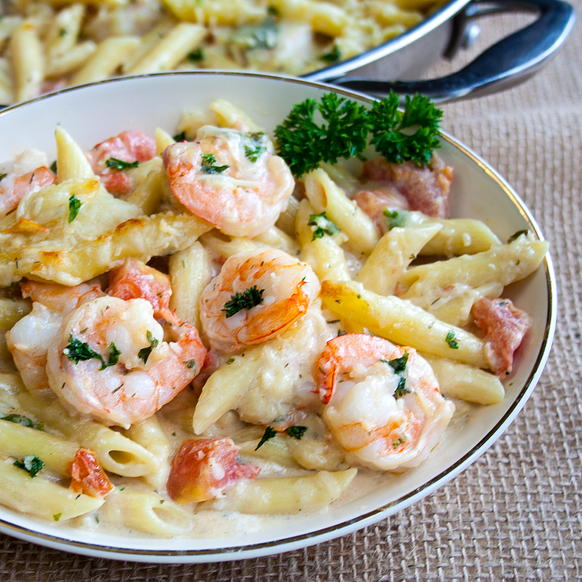

Pastas

Ingredients
- 1 teaspoon vegetable oil
- 1 (10 ounce) package penne pasta
- 3 tablespoons butter, divided
- 1 tablespoon minced garlic
- 1 pound uncooked medium shrimp, peeled and deveined
Steps
- Preheat the oven to 350 degrees F (175 degrees C).
- Bring a large pot of lightly salted water to a boil. Add penne and cook, stirring occasionally, until tender yet firm to the bite, about 11 min utes. Dra in.
- Heat 1 tablespoon butter and vegetable oil large oven-safe skillet over medium heat. Add garlic; cook until fragrant, about 30 seconds. Add shrimp, 2 tablespoons parsley, and dill. Cook and stir, flipping shrimp halfway, until pink, 3 to 4 minutes. Move shrimp to a plate and set aside.
Those are not all the steps but I got tired so you will have to figure out the next steps by yourself.